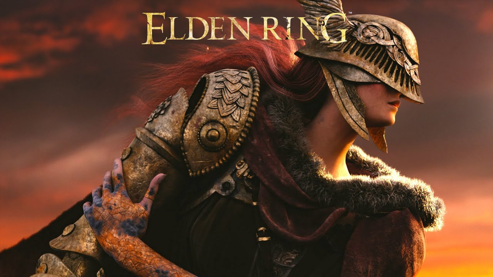

About Elden Ring
Best Quotes
"You Will Witness True Horror" - Malenia
"Who Is To Say That The Cardinal Sin Must Be Cardinal Forever?" - Enia
"Great Champion, Would You Allow Me To Hold You, But Briefly?" - Fia
"All Things Can Be Conjoined" - Miriel
"I'll Soon Birth Thee Anew" - Rennala
"I Command Thee, Kneel!" - Godrick
"Someone Must Extinguish Thy Flame" - Margit
Links
| Character | Location |
|---|---|
| Godwyn The Golden | Across the Rootsthe Prince of Death's Throne Site of Grace in Deeproot Depths. |
| Ranni The Witch | Ranni's Rise is in the northwest part of Liurni |
| Mohg, Lord Of Blood | Mohgwyn Palace reached by using the Pureblood Knight's Medal given by White Mask Varré. |
| Rykard, Lord Of Blasphemy | the Volcano Manor in Mt. Gelmir |
| Miquella | The back end of Mohg's boss arena, still dripping with blood and encased in his cocoon |
| Godrick the Grafted | Near the end of the Stormveil Castle |
| Morgott the Omen King | West Capital Rampart towards the south and ascend the giant branch of the Erdtree |
| Malenia, The Blade Of Miquella | Legacy Dungeon called Miquella's Haligtree, wherin lies Elphael, Brace of the Haligtree |
| Starscourge Radahn | Redmane Castle, Caelid |